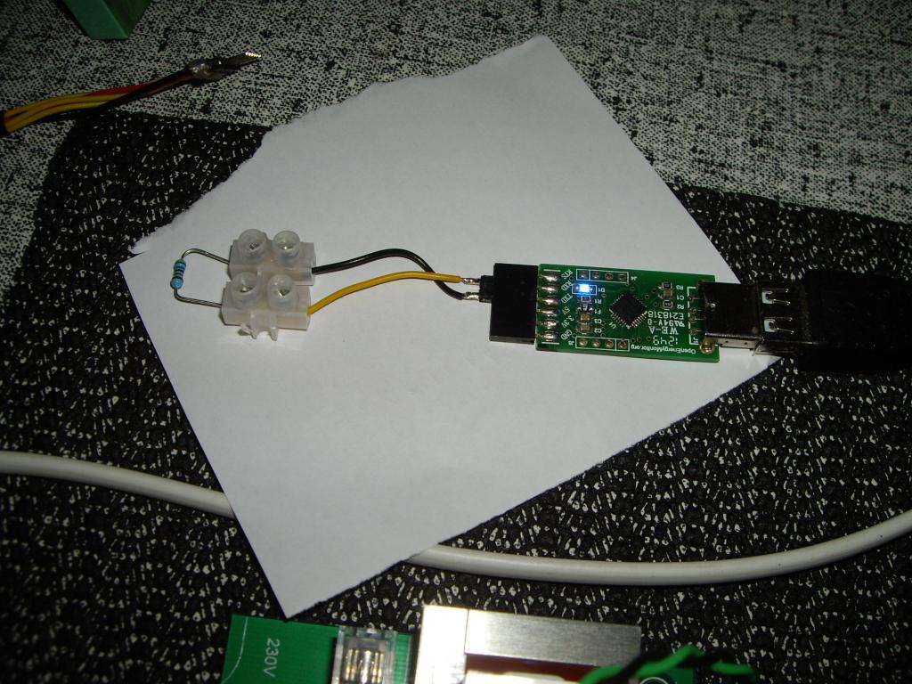
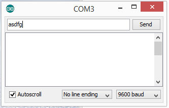
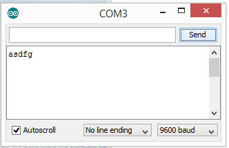

Hi everybody,
I'm a total noob concerning programming and electronics. I'v build my own emontx V2 which was hard for me. I followed all the instructions on the site to build the emontx and now I'am finished with the job.
I also installed the arduino environment and want to start with programming the board. But before I continue how can I check that my board works fine?
Are there a series of simple tests I can perform the check the health status of the emontx?
As you can see in the picture the green led is isn't turn on. So I'm afraid something went wrong during soldering. However the voltage check before soldering the rfm chip was fine.
thx
Re: trying to start my emontx v2
I assume you did all the voltage checks as you were building the emonTx?
First, you need the Arduino IDE on your computer. Instructions for getting and loading it are in Building Blocks > Setting up the Arduino Environment.
Your programmer is upside down! Line up the GND pins.
Next, you need to load a sketch.
I suggest the emonTx V2 version of the default sketch that comes with the later V3 versions. You will find it on GitHub > emonTxFirmware > emonTxV2 > emonTx_CT123_Voltage. You need both the files in that directory. Download both files into a directory in your sketchbook folder called "emonTx_CT123_Voltage". If you can compile and load that, then that is the first hurdle overcome.
If it prints the introduction "emonTX CT123 Voltage example" etc and then nothing more and the LED stays on for a long time, you have a problem with your RFM12B module.
If the LED stays on for about 5 s, then flashes once every 5 s, that's good.
Connect an ac adapter and check the serial output. It should be printing 4 values on each line, accompanied by a flash on the LED. The first three are power and should be zero or a small number, the 4th is your mains voltage.
Plug in a ct to input 1 and clip it over the line conductor only of a load - say an electric kettle. The 1st power should read the kettle power (3000 or so). If both those things happen, then most of it seems to be working. You can check the other 2 current inputs likewise.
If all is well, you can calibrate it properly. Instructions are in Building Blocks.
Re: trying to start my emontx v2
To get the LED to glow, you just need a sketch which drives IO pin 9 high.
If you load blink.ino from the Examples area in your Arduinio IDE, then change the three occurrences of "13" to "9" and reload, the green LED should start blinking. It's a great feeling when it does!
(blink.ino is at File->Examples->01.Basics->Blink)
The LED does have to be the correct way round, otherwise it will never turn on. In your photo, the flat on the LED needs to be towards the bottom of the picture.
Re: trying to start my emontx v2
I turned the programmer upside down. Is it ok now?
Ok, i compiled the code for blink.ino and i have no compiling errors
Uploading the code to the emontx is a problem. I installed the arduino software in C:\temp
can that be the problem?
I didn't try the solution of robert. Will do later on today
Re: trying to start my emontx v2
First, you will have to get your code to upload into the processor. The IDE will show "Uploading..." and then "Done uploading."
blink.ino is a good sketch to use for this purpose. As soon as this sketch has been uploaded, your LED should start to blink.
Then, you can try a more complex sketch ...
Re: trying to start my emontx v2
uploading the simple code doesn't work.
Gonna use the multimeter to test the components. I'll keep you posted
Re: trying to start my emontx v2
Yes, stay with blink.ino until you have that working. I can't quite tell some of the colour bands on the resistors, those that I can see look OK. So nothing stands out as being obviously wrong.
Have you installed your Arduino IDE and USB Drivers according to the instructions here, or Arduino's instructions?
Re: trying to start my emontx v2
The first thing to check is the settings for the Arduino upload facility. What COM port is it set to use? That should be the same as the COM port for the USB programmer. If you didn't install the drivers for the programmer or set the COM port, that would explain the inability to upload.
Re: trying to start my emontx v2
I've told Hulda to set up the IDE according to the instructions on this site, then asked if it has been. If that's not been done (i.e. he's using the Arduino drivers which we know don't work, and that's why I asked), there's little anyone can do to help.
Re: trying to start my emontx v2
hello,
I attached two screenshots
according to me the driver and the correct com port are selected no?
Re: trying to start my emontx v2
Yes, those appear to be correct.
Which version of Windows is it?
Is anything else attempting to use COM 5?
I thought in one of your earlier pictures that the programming header connector pins were not quite in line exactly. Is that in fact OK?
Re: trying to start my emontx v2
For a quick test of the com port and programmer, if you short the rx and tx pins of the ftdi programmer together with a piece of wire or a paper clip etc (without the emonTx connected) anything you type in the arduino IDE's serial console should echo back and appear in the 2nd textbox of the console when you press send.
Paul
Re: trying to start my emontx v2
@Robert Hall - You are right. they are not in line. I'll try to fix it this weekend
Re: trying to start my emontx v2
@pb66 - I'll try to test it this at lunchbreak - i'll keep your posted
Re: trying to start my emontx v2
Thanks pb66, that's a great test.
Here, I've joined the two serial pins together with a low valued resistor, but it works fine. Any characters that are typed into the upper 'send' box in the IDE then appear in the lower 'received data' box when the [Enter] key is pressed.

(sorry if this image is over-size. Not sure how to make it smaller)
Re: trying to start my emontx v2
Hi,
I joined the pins together with a piece of solderwire, tested it and.... Still nothing
I didn't bought the usb cable in the shop of openenergy. Can that be the problem? it's my own usb cable
Re: trying to start my emontx v2
You could check the cable with a multimeter, but can you plug the programmer (which is from the OEM shop) directly into your computer and then try joining the pins (RXD - TXD) again? If that does work, your cable is faulty. If it does not, then I think the drivers are not installed correctly. Which version of Windows do you have?
Re: trying to start my emontx v2
I use windows 7 and this is a screenshot of my driver settings
Re: trying to start my emontx v2
You posted 2 screenshots, one showing you are on COM2 and another one on COM5.
Try to set your Arduino environment on the same COM port you are using.
Re: trying to start my emontx v2
it's true that i posted 2 screenshots with different com-ports that's because i reinstalled everything and tried other ports and so on.
Re: trying to start my emontx v2
I have access only to Windows XP or Windows 8.1, so I'm sorry I cannot help there.
Re: trying to start my emontx v2
If that can be of any help, I have installed the Windows 7 driver downloaded from that site: http://www.silabs.com/products/mcu/Pages/USBtoUARTBridgeVCPDrivers.aspx
However, I bought the USB bridge in the OpenEnergyMonitor shop.
Re: trying to start my emontx v2
yes daturach i installed these drivers already a 1000 times. When I attach the programmer, the device is detected by the device manager of win7.
I'am about to throw the towel...
can i alse use a simple ftdi-cable to program the emontxV2?
I can also buy a new programmer and a usb cable on the openenergy site before i get nuts. Pfff...
Re: trying to start my emontx v2
To program an Arduino Uno, only a standard USB cable is needed (no programmer or extra drivers). The emonTx requires the USB/USART programmer and a (different) USB cable. Because they both have the same processor on board, the Arduino and emonTx can run exactly the same software.
An Arduino may be an easy way for you to get started ...
Re: trying to start my emontx v2
Do you have access to a linux PC or Raspberry Pi ? the shop bought FTDI programmer doesn't need any drivers on linux. so you could easily determine if your programmer and lead are ok or not if you do.
If you do not, you could download a free linux live OS image to a usb stick and temporarily reboot your pc to linux.
If you do find your lead/programmer is at fault and you do have a Pi and 5x F-F link wires you could easily program the emonTx directly from the Pi without a programmer, it's easier to use either a Pi with a monitor/keyboard or my preference is to use windows "Remote Desktop Connection".
Paul
Re: trying to start my emontx v2
This is Windows 8.1, but Windows 7 is similar.
Plug your programmer (which is from the OEM shop?) directly into your computer and then try joining the pins (RXD - TXD) again. Can you type a message:

click "Send" and does it appear here?

If your message appears in the large window, your drivers and programmer are working.
Re: trying to start my emontx v2
owkay,
@Calypso I'am using a regular usb cable. I thought all usb cables were the same. If that is the cause, then I'am so stupid.
@pb66: Yes I have an raspberry pi but no 5x FF link wire
@ Robert, I bought the programmer at the OEM shop but nog the usb cable. My usb cable is a standard usb cable. Is a different usb cable required? Anyway the test i did(joining the Rx en Td-pin was positive. What now?
Re: trying to start my emontx v2
The programmer and drivers are both good.
Now repeat the test with your USB cable between your computer and the programmer. If the test fails, the problem is your cable. If it passes, the problem is in your emonTx.
All USB cables should be wired the same. If the cable fails, you might find the fault with a multimeter - one or more wires open-circuit or a short-circuit between two wires, or a faulty connector at either end. Do not worry, we have ALL been caught by a faulty cable at some time.
Re: trying to start my emontx v2
That is good news.
Now you should connect the emontx inplace of the link and start the arduino IDE (make sure all previous instances were closed first) to see if you can communicate with the emonTx by uploading "blink".
Can you confirm if the MCU (the ATmega328P) has the bootloader installed? Did you get a kit from the shop or source your own parts? You can only use the FTDI programmer to load sketches via serial IF there is already a bootloader.
The USB leads can differ but as rule if it plugs in it should work. I think Robin and Robert are picturing a USB-A to USB-A lead as our programmers are USB-A, where as yours is the newer micro usb style, I believe.
Paul
Re: trying to start my emontx v2
Hi Robert - looking at the pic in the OP the programmer has a micro usb so I assume the test must of been with lead in-line.
Paul
Re: trying to start my emontx v2
Unless Hulda has a micro-micro extension and a converter at the computer end, or a computer with a micro. Whichever, we're getting closer to the fault.
Re: trying to start my emontx v2
yes, i bought all my components in the OEM shop including the chip. My usb cable is a mini usb.
If I try to upload the blink programme, it fails.
So there is a problem with my emontx.
when soldering I did the voltage check before soldering the rfm12B module. I had the 3.3 v
After soldering when I check the same Pins I got les then 1v. Is this normal?
Re: trying to start my emontx v2
There is definitely a problem there. You should read 3.3 V between Bat + and Bat - (Those are the same as Vcc and GND.)
Look for a fine strand of solder between any two pins of your RFM12B, particularly the two next to the antenna. Those are Vcc and GND.
If you cannot see a fault in your soldering, it is possible that you have a faulty RFM12B.
The very first thing you do when you are testing anything is check the power supplies.
Re: trying to start my emontx v2
Ok, on Bat + en Bat - I have 0.6V and and the RFM12B I have also 0.6V
All the other GND+PWR give me 4.7V
I tried to remove the RFM12B but it's impossible.
The only option left is to start from scratch and order the a new emontxV2 :(
Fingers crossed...
Thx everybody for your patience and your help. You guys are all so helpful. This is a great community and i'll try to convince my father and brother who have also solar panels to invest in your monitor technology
Re: trying to start my emontx v2
Let us see what Glyn or Trystan say before you start again.
Re: trying to start my emontx v2
One final thought:
Can you unplug the processor and then check the voltages again?
Re: trying to start my emontx v2
I also wonder if there is any value in whipping out the voltage regulator, could a prolonged use of an inverted programmer cause it to fail? a point could be proved by then tacking a link wire from the ftdi p5 to a 3.3v point (eg batt+) to power up direct from the programmer. ???
Paul
Re: trying to start my emontx v2
I removed the processor but the DIL is still on the pcb - still no result
@pb66 I'll try your proposition this afternoon. I'll post the results here
Re: trying to start my emontx v2
Hi,
The progammer works fine because the voltage onto the FTDI pins is 3.3V.
BTW: is it normal that the MCP1702 is so hot that you can't touch it?
As you can see I did the test but I have only 0.6V on the bat+ and bat- and the programmer becomes so hot that it's starting to smell a bit.
Re: trying to start my emontx v2
STOP !!!!
Disconnect the programmer
Appologies for shouting but didn't want you to fry anything in the time it took me to write a full post
"BTW: is it normal that the MCP1702 is so hot that you can't touch it?" no it isn't !
My suggestion was to REMOVE the voltage reg and power via the programmer, NOT bypass while still in place.
Was it getting hot before you out the link on of just after? if it was hot before there is definitely a short on the board.
Paul
Re: trying to start my emontx v2
I already disconnected the programmer and tested it and it is still functioning fine.
The MCP1702 was already getting hot from the very beginning I assembled the emontx
My suggestion was to REMOVE the voltage reg and power via the programmer - I'm sorry I don't know how to do that
Re: trying to start my emontx v2
I suspect the MCP1702 voltage regulator (reg) was ok prior to the fitment of the rfm board as you state the voltage was ok then but not after. Have you checked for shorts visually with a magnifying glass ? most likely on the rfm pads.
Re: trying to start my emontx v2
yes I checked for shorts visually with a magnifying glas and magnified pictures. I cannot see any of it.
Re: trying to start my emontx v2
Sorry to hear that your having trouble. It could be you have a faulty rf module. If you want to send the board back to us we would be happy to try and take a look at it for you. Thanks for trying help guys
Re: trying to start my emontx v2
Hulda, I have several emonTx V2 boards here that I no longer have any use for. Most if not all have an 868 MHz RF module in place. If you send me a PM with your address, you're welcome to one of them. Some channels may not be populated, but the board should work OK. This will allow you to upload sketches and run some simple checks.
Re: trying to start my emontx v2
From the picture in the first post, it's a 433 MHz module that Hulda has.
Re: trying to start my emontx v2
OK, but the problems that have been discussed on this thread appear to be more fundamental than this; nothing is working and the Vreg is overheating.
Over short distances, an 868 MHz RFM12B can apparently function satisfactorily at 433 MHz. Replacing the RF module is not a simple task on this board.
Re: trying to start my emontx v2
I wanted to point out that you kind offer won't help Hulda very much, because although he can do as you suggest, the radio range on the wrong band is not good, so unless you have a non-radio V2, he still has the problem of removing the RFM12B, and that needs specialist tools.
We still don't know the real problem, but Hulda assembled the board up to installing the RFM12B, and all was well, then he completed the assembly and it didn't work. But in the screen shot attached to the first post, the programmer is upside down meaning that TXD got the 5 V supply, RXD got the 3.3 V supply, RTS was programmer GND, the 5 V rail got TXD and GND got RTS which is used as the reset. The 3.3 V connection on the emonTx is not used. The emonTx 3.3 V comes from the programmer 5 V via the MCP1702, the 3.3 V regulator, which appears to be shorted to GND via 1 forward-biased junction. And it apparently is not the processor as he's still got the fault with that removed.
I don't think Paul's suggestion that the MCP1702 saw a reversed voltage is correct, because reversing the programmer on the header does not swap the 5 V supply over.
Re: trying to start my emontx v2
I tend to agree the 'short' is most likely rfm related, the 'reg removal' suggestion was prior to checking the schematic as I thought it was easier to remove than the rfm board to reach a conclusion but the fact the MCP1702 has been hot since the rfm was fitted is pretty conclusive too.
I think the best thing to do is to send it off to Glyn, Nice offer though Robin!
Paul
Re: trying to start my emontx v2
Hulda has told us that the 3.3 V rail was OK before adding the RFM12B, but I'm not aware that he has ever been able to upload a sketch to this board. Maybe he would be able to confirm this.
I could probably find a non-RF emonTx V2 in my collection but it may have some other bits & pieces on board.